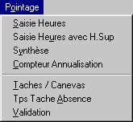
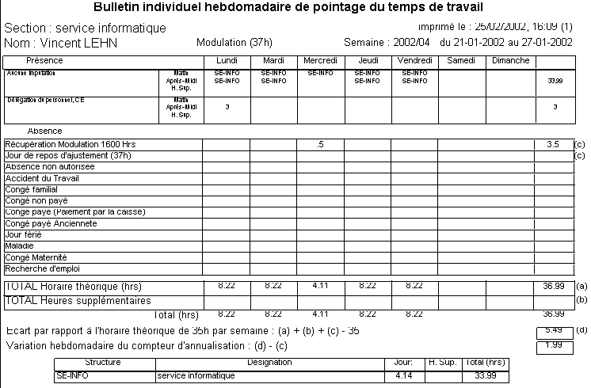
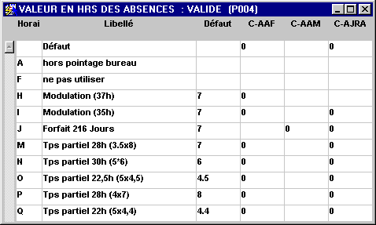

Retour
Accueil usine
Accueil agence
Prise en main
Requêtes (F2)

Sites Internet
|
|
Pointage agence |
- Introduction
- Menus
- Masque de saisie
- Édition du bulletin individuel hebdomadaire
- Écran de synthèse
- Compteur d'annualisation
- Édition de la synthèse par chantier
- Validation
- Paramétrage des canevas et des tâches
- Types horaires
- Paramétrage des services
Introduction : (haut de page)
Ce module a pour but de gérer le pointage des heures (et les absences) des collaborateurs non suivis par la prépaye actuelle. Dans un premier temps, cela concerne la Direction Technique.
Les services concernés doivent être définis par une fiche structure avec la nature SE (pour service). Dans les propriétés doit apparaître le canevas (liste des tâches suivies) correspondant (CAN_POIN). Si cette propriété n'est pas définie, c'est le canevas ETUDES qui est utilisé par défaut.
Les personnes concernées doivent avoir une fiche matricule renseignée avec le bon service et le bon type horaire (modulation 1600 heures et forfait 217 jours). Afin de pouvoir gérer les exceptions, il est possible d'affecter un canevas particulier à une personne en utilisant la même propriété que le service mais cette fois-ci dans la fiche matricule.
Menus : (haut de page)
Il existe deux niveaux de menus en fonction des droits d'utilisation. Le premier ne permet que de saisir/consulter des pointages et également de faire des synthèses d'heures. Le deuxième est prévu pour le paramétrage complet ainsi que la validation des fiches.
| Utilisateur courant | Administrateur |
 |
 |
Masque de saisie : (haut de page)

Ce masque est prévu pour fonctionner par semaine, sans descendre en-dessous de la demi-journée. De cette façon, les personnes saisissent directement l'affectation (chantier ou structure) sans renseigner les heures, sauf pour les heures supplémentaires. S'il y a des heures supplémentaires, celles-ci sont affectées au chantier de l'après-midi.
Si l'on renseigne le chantier en entête, il suffira d'un double-click dans la zone de saisie concernée pour le récupérer.
Si l'on renseigne la tâche en entête, on accède directement à la ligne concernée en début de saisie.
Si une saisie de semaine précédente existe déjà, GENI propose de la récupérer pour accélérer la saisie.
Pour obtenir de l'aide sur l'utilisation des liste il suffit de clicker sur la zone "Aide - information".
Quand on est sur une zone de saisie d'affectation, il suffit de taper
quelques lettres de l'abrégé du chantier puis de faire F4 pour obtenir la
liste correspondante et ainsi le sélectionner. Pour les structures autres que
les chantiers, faire shift F4.
Pour le pavé des absences, on saisit par journée valeurs possibles : 0, 0.5 ou
1.
Pour saisir des heures de délégation, on peut procéder de deux façons. Soit ces heures sont en plus des heures affectées, dans ce cas on utilise la ligne "H. sup.". Soit c'est quelques heures à la place d'une affectation, dans ce cas il faut d'abord saisir l'affectation puis saisir les heures de délégation dans la ligne correspondante ("Matin" ou "Après-midi"). Dans le second cas on retire les heures de délégation des heures imputées au chantier.
La ligne H. sup. n'est accessible que pour les personnes habilitées (comme la validation).
Édition du bulletin individuel hebdomadaire : (haut de page)
Ce bulletin est édité à partir du masque de saisie précédent et en faisant Ctrl 0.

Le bulletin est édité barré tant que les heures ne sont pas validées.
Écran de synthèse : (haut de page)

C'est un masque de consultation avec l'entête servant à définir les critères de sélection.
Des colonnes s'ajoutent ou se retirent en fonction des tâches concernées (seules les tâches où il y a du pointage apparaissent).
Il est possible de saisir "NON-IMPUTE" dans le chantier pour obtenir tous les pointages d'absences et de délégation.
Ce tableau peut être exporté sur Excel.
Boutons :
0 - pour
éditer un bulletin
1 - pour
éditer tous les bulletins concernés
2 - pour
éditer la synthèse des heures d'études par chantier (avec les critères période,
chantier, service uniquement)
9 - pour valider les heures sélectionnées
(valide uniquement si l'on passe par le menu "Synthèse - Validation").
Remarque : la validation enchaîne sur l'édition des bulletins validés
Compteur d'annualisation : (haut de page)

Cet écran permet de consulter non seulement l'état des compteurs
d'annualisation, mais aussi le nombre de jours de congés pris, ainsi que les
jours fériés.
Attention : la période fonctionne avec des semaines entières validées.
Édition de la synthèse par chantier : (haut de page)

Cette édition s'obtient en cliquant sur le bouton 2 du masque précédent.
Elle synthétise toutes les heures pointées en fonction des critères choisis
(période, chantier, service uniquement).
Si elle est barrée, cela signifie que certaines heures y figurant ne sont pas
validées.
Nous avons un saut de page à chaque changement de chantier et un sous total par service.
Des colonnes s'ajoutent ou se retirent en fonction des tâches concernées (seules les tâches où il y a du pointage apparaissent).
Validation : (haut de page)

Cet écran est prévu pour valider une semaine complète de tout un service.
Pour cela, toutes les informations nécessaires à la prise de décision
qu'implique la validation sont récupérées :
Matricule : matricule de la personne concernée
Nom : nom et prénom de la personne concernée
Validé : bulletin déjà validé (O ou N)
Tot. théorique : horaire total théorique de la période
Tot. hrs : heures totales théoriques pointées (hors heures supplémentaires)
hrs sup. : heures supplémentaires pointées
Écart : Tot. théorique - Tot. hrs - hrs sup.
Nb 1/2 journées : nombre de demi-journées pointées (permet de savoir si un
bulletin a été rempli entièrement)
Si l'ion veut contrôler l'affectation des heures, le pavé du bas montre le
détail du pointage jour par jour, pour la personne courante.
Boutons :
0 - pour
éditer un bulletin
1 - pour
éditer tous les bulletins concernés
3 - pour valider
un bulletin
4 - pour valider tous les bulletins concernés
9 - pour dé valider
le bulletin courant
Paramétrage des canevas et des tâches : (haut de page)

Taches : code tâche (doit être unique)
Libellé : libellé de la tâche (texte libre)
Type : C pour absence, D pour délégation et T pour travaillée
Payé : coché si la tâche est considérée comme payée
Cloturé le : date de clôture en cas de changement de canevas
Seules les tâches de type T ou D sont paramétrables pour un canevas.
Seules les tâches de type T sont imputables à un chantier ou une structure,
les autres apparaissent sur le chantier "NON-IMPUTE".
Types horaires : (haut de page)

Horaire : code horaire (A et F ne sont plus utilisés)
Type : H pour calcul en heures, J pour calcul en jours
Autorisé H. sup : coché si le type horaire permet la saisie d'heures
supplémentaires
Tps 1/2 journée : durée théorique de la demi-journée travaillée (en
heures)
Tps de la semaine : durée théorique de la semaine (en heures)
Libellé : libellé du type (texte libre)
Pour paramétrer les absences il faut aller sur l'écran suivant :

Pour chaque type horaire et chaque code absence, on peut
définir un temps théorique (en heures par jour). Afin de faciliter les mise à
jour, il est possible de ne renseigner que les exceptions :
si un temps est défini pour un type horaire et un code absence, il est pris
sinon, si un temps est défini pour un type horaire et le code absence par
défaut, il est pris
sinon, si un temps est défini pour un code absence et le type horaire par
défaut, il est pris
sinon, erreur.
La valeur 0 signifie que le cas de figure est impossible, donc ce code absence
ne figurera pas sur le masque de saisie (JRA seulement pour la "Modulation
1600 hrs", par exemple).
Paramétrage des services : (haut de page)

Ne pas oublier la propriété CAN_POIN avec le nom du canevas.
Liste des structures créées au 01/02/02 (celle-ci pourra évoluer par la suite) :
| Structure | Abrégé | Nature | Libellé |
| SE-AG-COLMAR | SERCOL | SE | Agence de Colmar |
| SE-AG-PARIS | SERPAR | SE | Direction agence de Paris |
| SE-BE-COLMAR | SERDT | SE | Bureau d'études de Colmar |
| SE-BE-LANCEMENT | SERDT | SE | Bureau d'études Lancement |
| SE-BE-PARIS | SERDT | SE | Bureau d'études de l'agence de Paris |
| SE-CALCUL | SERDT | SE | Service des calculateurs |
| SE-COM-COLMAR | SERCOM | SE | Service commercial Colmar |
| SE-COM-PARIS | SERCOM | SE | Service commercial Paris |
| SE-COMPTA | SERCOM | SE | Service comptable |
| SE-CONCEPTION | SERDT | SE | Service conception |
| SE-DIR-PROD | SERPRO | SE | Direction de production |
| SE-DIR-RH | SERDRH | SE | Direction des Ressources Humaines |
| SE-DIR-TECHNIQUE | SERDT | SE | Direction Technique |
| SE-EX-PARIS | SERPAR | SE | Service exploitation de Paris |
| SE-INFO | SERINF | SE | service informatique |
| SE-PAD-PARIS | SERPAR | SE | Service Paddington Paris |
| SE-PADDINGTON | SERPAD | SE | Service Paddington |
| SE-POSE-COLMAR | SERPOS | SE | Poseurs Colmar |
| SE-PRO-PINON | SERPIN | SE | Production de Pinon |
| SE-PROTO | SERPRO | SE | Service prototypes / maquettes |
| SE-SAV-PARIS | SERPAR | SE | Service SAV Paris |
| SE-SEC-GEN | SERSEC | SE | Secrétariat général |
| SE-STR-PINON | SERPIN | SE | Structure de Pinon |
| SE-TR-PARIS | SERPAR | SE | Service travaux de Paris |
Paramétrage des fiches personnels : (haut de page)

Ne pas oublier de renseigner les champs Service et Horaire. Si la personne a un canevas particulier, il faut le préciser avec la propriété CAN_POIN dans la fiche personnel.
Remarque : attention au changement de service d'une personne, tout son historique de pointage suit (il n'y a pas d'historique de l'affectation). Si l'on veut que le pointage ne suive pas, il faut créer une nouvelle fiche personnel.